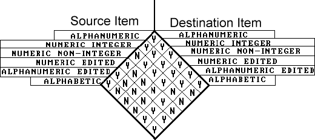

Introduction
- In "strongly typed" languages like Modula-2, Pascal or ADA the assignment operation is simple because assignment is only allowed between data items with compatible types. The simplicity of assignment in these languages, is achieved at the "cost" of having a large number of data types.
- In COBOL there are basically only three data types;
- Alphabetic (PIC A)
- Alphanumeric (PIC X)
- Numeric (PIC 9)
- But this simplicity is achieved only at the cost of having a very complex assignment statement.
- In COBOL, assignment is achieved using the MOVE verb.
The MOVE verb
(MOVE Source$#il TO Destination$#i ...)
- As we can see from the syntax metalanguage above, the MOVE copies data from the source identifier or literal to one or more destination identifiers.
- Although this sounds simple, the actual operation of the MOVE is somewhat more complicated and is governed by a number of rules
MOVE rules
- In most other programming languages, data is assigned from the source item on the right to the destination item on the left (e.g. Qty = 10;) but in COBOL the MOVE assigns data from left to right. The source item is on the left of the word TO and the receiving item(s) is on the right.
- The source and destination identifiers can be group or elementary data-items.
- When data is moved into an item, the contents of the item are completely replaced.
- If the number of characters in the source data-item is less than the number in the destination item, the rest of the destination item is filled with zeros or spaces.
- If the source data-item is larger than the destination item, the characters that cannot fit into the destination item will be lost. This is known as truncation.
- When the destination item is alphanumeric or alphabetic (PIC X or A), data is copied into the destination area from left to right with space filling or truncation on the right.
- When the destination item is numeric, or edited numeric, data is aligned along the decimal point with zero filling or truncation as necessary.
- When the decimal point is not explicitly specified in either the source or destination items, the item is treated as if it had an assumed decimal point immediately after its rightmost character.
MOVE combinations
- Although COBOL is much less restrictive in this respect than many other languages, certain combinations of sending and receiving data types are not permitted and will be rejected by the compiler. The valid and invalid MOVE combinations are shown in the diagram below:

MOVE examples
- Examine the examples in the animation below in combination with the MOVE rules above. Make sure you understand the why the moves produce the results shown.